Planta Virtual
Simulação de plantas de processo como um grafo de equipamentos conectados.
O que é
Um conjunto de motores de simulação, um para cada tipo de equipamento (reatores, trocadores de calor, separadores, compressores, bombas e outros), que se conectam entre si para formar uma planta. Cada motor foi construído a partir de correlações e modelos publicados, e o conjunto tem uma suíte de testes automatizados que cresce junto com o código.
É uma ferramenta de estudo e dimensionamento. Não é um gêmeo digital ligado a sensores reais nem um produto comercial.
Equipamentos
Os diagramas que o editor usa para representar os equipamentos. Toque em um para ampliar.
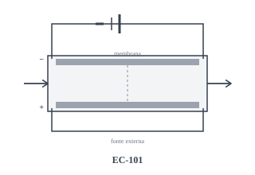
Célula eletroquímica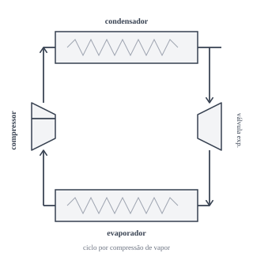
Ciclo de refrigeração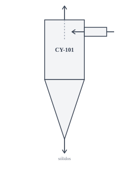
Ciclone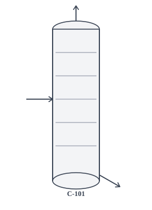
Coluna de leito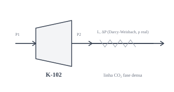
Compressor e tubulação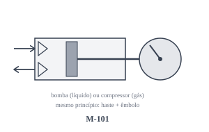
Máquina alternativa (bomba ou compressor)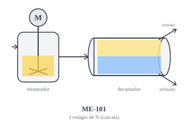
Misturador-decantador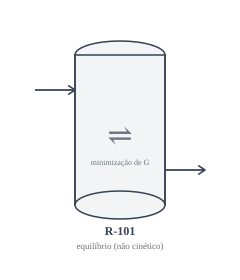
Reator de equilíbrio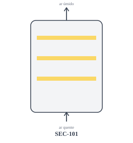
Secador em batelada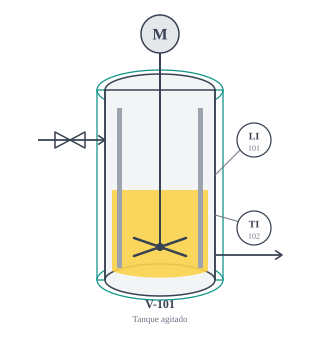
Tanque agitado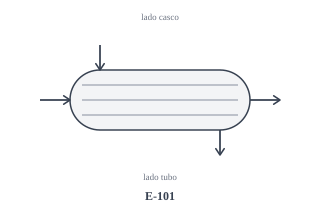
Trocador casco e tubo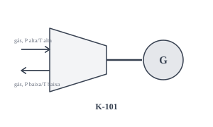
Turboexpansor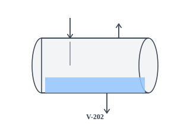
Vaso separador horizontal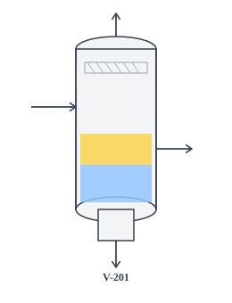
Vaso separador verticalExperimente
O Editor de Fluxograma permite montar um fluxograma de processo no navegador e exportá-lo em JSON. Para cálculos de processo e hidráulica que funcionam offline, veja o Caderno.
Estado do projeto
Em desenvolvimento ativo. O código ainda não é público, e esta página apresenta o projeto sem publicar os motores.